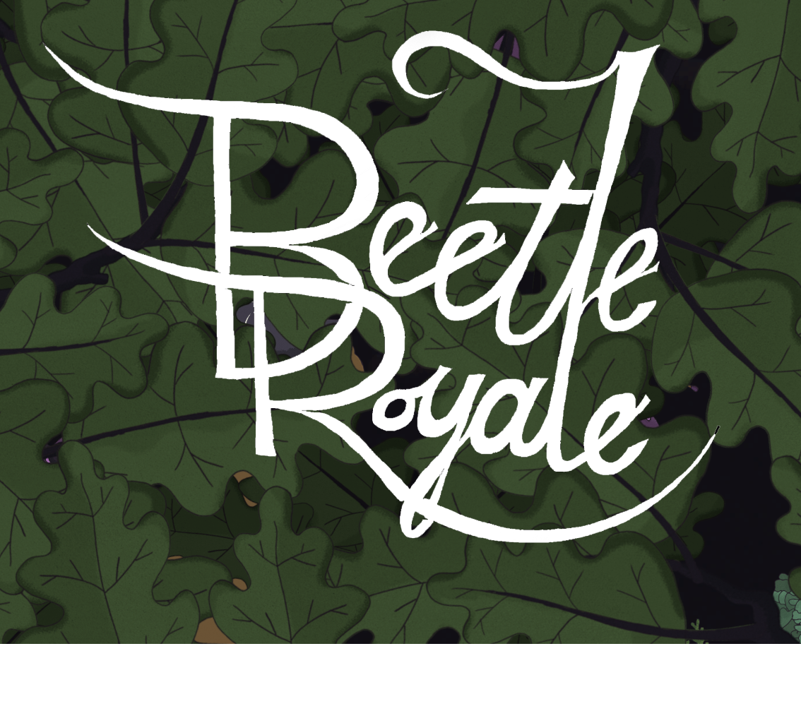
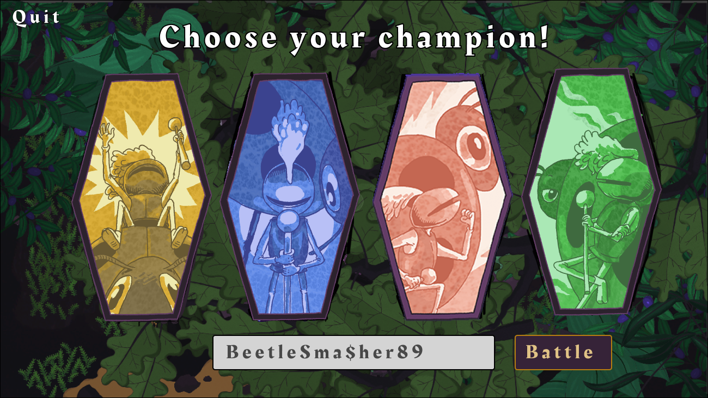

Brandon Startz
Game Developer
Game Developer

Hi! I am Brandon, a game programmer and games user researcher. This is a collection of my personal, educational and professional projects.

After becoming interested in ML during my Masters Thesis, I decided to continue exploring the potential of NLP.
Since I love learning languages, I thought I would create a tool to help streamline one of the most time consuming parts of learning a langauge: processing new vocabulary.
Objective: To take a foreign-language PDF and create a list of all words, lemmitize them (put them in their base-form), then remove any words I already know. From there, the program creates a frequency list of the words, accompanied with an example sentence of that word. A Google Translate plugin is then used to generate translations for each word. From there, the CSV file can be easily imported into Anki flashcards for memorization.

Output CSV example of the program
Feel & Play is a musical app that helps you practice emotional skills. An inspiringly participatory app adventure combines musicality, visuality and playfulness with multi-user collaboration.
As the lead developer of this Unity project, I guided a team of developers to improve the quality and functionality of the existing codebase as well as add new features, such as painting.
Feel and Play was funded by Finland's ministry of education, in an effort to promote their goals of improved emotional intelligence in children.

Remote playtesting usually requires the manual review of tens of hours of footage, leveraging recent advances in AI, this system greatly increases the speed of insight-collection, allowing a larger turnover of user tests, at the cost of a slightly reduced number of insights found per playtest.
In brief, transcripts were generated from the playtest videos, which were then analyzed by a sentence classifier trained with manually labelled data and the classified results (in the form of video timestamps) are then passed to the user researcher, sorted by sentiment and intensity.

The development process of the automation system

PlaytestCloud, the service used to collect playtest data

A freelancing project created to premiere a 180 degree VR video for a film festival.
This was a solo project, I used Unity, C#, the AVpro video package and Oculus Dev Kit to create the project for Oculus Quests 1 & 2.
A PC FPS with fluid movement, wall-running and frantic race up a tower
I was the audio programmer, using FMOD with Unity and C# for music and sound effects. I also conducted playtests as a user researcher.
Student project for the Game Project course at Aalto University, developed in 7 months using Unity. Team Size: 10.


A PC battle royale where players ride beetles in an arena, using a second-person camera that follows the beetle, not the character. Don't get knocked off!
I wrote code for the UI, various gameplay elements, and controller input.
Student project for the Game Project course at Aalto University, developed in 3 months using Unity. Team Size: 6

